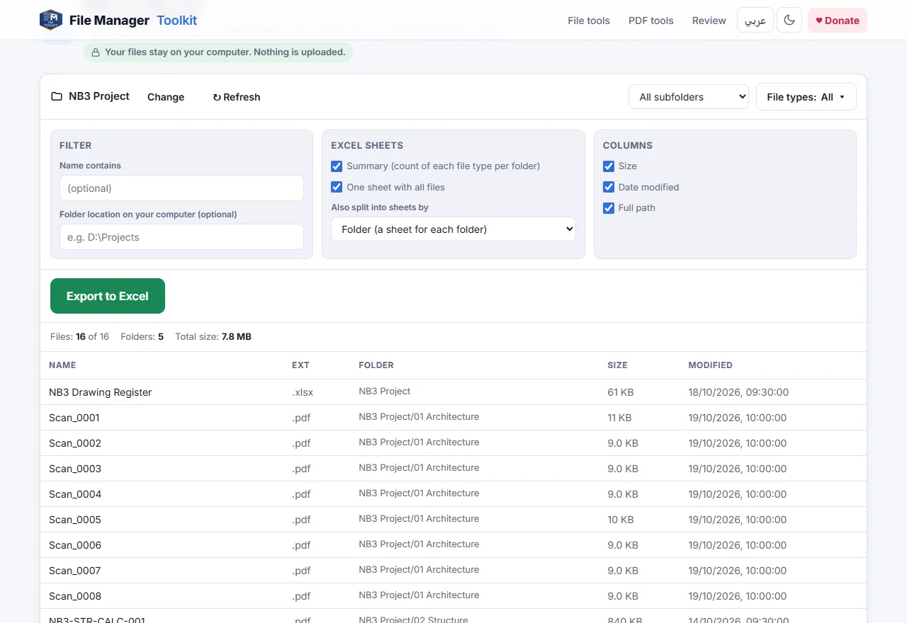

How to list all files in a folder and subfolders to Excel
Get every file name in a folder tree into an Excel workbook, with its folder, type, size and date, in a few clicks and without macros, Power Query or command prompt tricks.
Your files stay on your computer. Nothing is uploaded.
Short answer
Open Files to Excel, click Select Folder and pick the main folder. Every file in it and in all its subfolders is listed. Choose the sheets and columns you want and click Export to Excel.
The usual ways, and why they are slow
The common answers to this question are a dir /b command in the command prompt, Copy as path in Windows Explorer, Power Query in Excel or a VBA macro. They all work, but each one needs cleaning afterwards: paths to split into columns, folders to separate from files, sizes in bytes and macros that your company may block.
When you need a file list for a project handover, an audit or a document register, you want the result ready to use: one row per file, the folder in its own column, a readable size and date, and maybe one sheet per folder.
Step by step
Choose the main folder
Open the tool and click Select Folder. Pick the top folder of the project. The tool reads it and every folder inside it, however deep.
Choose which folders and file types
Keep All subfolders, or choose Current folder only or Select subfolders. Use File types to keep only some types, for example PDF and DWG, and Name contains to filter by a word.
Choose the sheets
Under Excel sheets, tick Summary for a count of each file type per folder and One sheet with all files for the full list. You can also split the list into a sheet for each folder or for each file type.
Choose the columns
Tick Size, Date modified and Full path as needed. Type the folder location on your computer, for example D:\Projects, if you want full paths that you can paste into Explorer.
Export to Excel
Click Export to Excel. The workbook is saved to your downloads with a frozen header row, ready to filter and sort.

What you can use the list for
- A document register or transmittal list for a project handover.
- Checking that every discipline folder has the files it should, using the Summary sheet.
- Finding old or very large files before archiving a project.
- Planning a bulk rename: copy the list, write the new names next to it, then use Rename Files.
Which browser to use
Chrome and Edge on a computer read the folder directly. Firefox and Safari also work: they ask you to confirm the folder upload in a browser window, but the files are still only read on your computer and never sent anywhere. Only file names and details are read, not the contents, so even very large folders are fast.
Export your file list now
Free, runs in your browser, and your files never leave your computer.
Open Files to Excel →Questions
How do I copy all file names from a folder into Excel?
Choose the folder in Files to Excel and click Export to Excel. Each file name goes into its own row, with the extension and folder in separate columns.
Does it include files in subfolders?
Yes. All subfolders are included by default. You can also choose only the current folder or pick some subfolders.
Do I need VBA, macros or Power Query?
No. Nothing is installed in Excel. The tool creates a normal .xlsx workbook.
Are my files uploaded?
No. Only the names, sizes and dates are read, by your own browser on your own computer. Nothing is sent to a server.
How many files can it list?
Tens of thousands. Large folders take a few seconds to read.